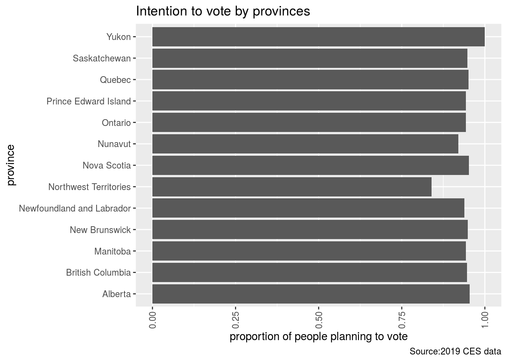

#Abstract Election plays a significant role in forming Canadian government and as a Canadian citizen, it is a great opportunity for us to support the political party that we choose to believe. In this paper, the 2019 CES data, which was a survey conducted in the lead-up to the 2019 Federal election, is analyzed in order to demonstrate the different numbers of people willing to vote by each province. The findings in this paper develops the forecasting for the election and predicts the number of voting public.
Introduction
Understanding and participating in Canadian election is essential for Canadians in order to contribute to a strong and healthy government. Canadian Election Study conducted a great survey based on Canadians throughout the country which advanced the level of understanding of electoral democracy in Canada.The dataset created by CES based on Canadian elections allows people to easily access to the information that they want from different elections and pay attention to Canadian politics.
I brought the dataset from CES and selected two variables to create a graph. One variable is “province” and the other is “likeliness to vote.” As you will find out later in this paper, there is not much difference in level of willingness to vote in each province. Every province is relatively leaned towards voting which is a positive sign in elections.
This paper specifically discusses the relationship between the people in each province and the likeliness of voting. As you read through this paper you will notice that in Canada, many people in every province are willing to vote;thus, there is not much of a variety in the graph. In the future, I will be working more towards finding and choosing the variables that would illustrate more variation.
get_decon()
## TO CITE THIS SURVEY FILE: Stephenson, Laura B; Harell, Allison; Rubenson, Daniel; Loewen, Peter John, 2020, '2019 Canadian Election Study - Online Survey',
## https://doi.org/10.7910/DVN/DUS88V, Harvard Dataverse, V1
## LINK: https://dataverse.harvard.edu/dataset.xhtml?persistentId=doi:10.7910/DVN/DUS88V
head(decon)
## # A tibble: 6 x 22
## ces_code citizenship yob gender province_territ… education lr lr_bef
## <chr> <fct> <fct> <fct> <fct> <fct> <chr> <chr>
## 1 ces2019… Canadian c… 1989 A wom… Quebec Master's… 2 <NA>
## 2 ces2019… Canadian c… 1998 A wom… Quebec Master's… 2 <NA>
## 3 ces2019… Canadian c… 2000 A wom… Ontario Some uni… 4 4
## 4 ces2019… Canadian c… 1998 A man Ontario Some uni… 7 7
## 5 ces2019… Canadian c… 2000 A wom… Ontario Complete… 4 4
## 6 ces2019… Canadian c… 1999 A wom… Ontario Some uni… 4 4
## # … with 14 more variables: lr_aft <chr>, religion <fct>,
## # sexuality_selected <fct>, sexuality_text <chr>, language_eng <fct>,
## # language_fr <fct>, language_abgl <fct>, employment <fct>, income <dbl>,
## # income_cat <fct>, marital <fct>, econ_retro <fct>, econ_fed <fct>,
## # econ_self <fct>#Data The CES dataset consists 37822 observations with 620 variables.If I run the function “get_decon” it provides 22 categorical variables with proper coding. “My data” datset combines two variables that are used in this analysis.
mydata=data.frame(decon$province_territory,ces2019_web$cps19_v_likely)
#unique(mydata$ces2019_web.cps19_v_likely)
mydata$vote=ifelse(mydata$ces2019_web.cps19_v_likely==5 | mydata$ces2019_web.cps19_v_likely==6 | is.na(mydata$ces2019_web.cps19_v_likely), NA, ifelse(mydata$ces2019_web.cps19_v_likely==3 | mydata$ces2019_web.cps19_v_likely==4, 0, 1))#Data Discussion
The two variables that I focus on are “province” and “intention to vote in upcoming election” response to the upcoming election. Both variables are categorical. The original Likert scale for the “intention to vote” variable has been converted in binary “yes or no” response. People who are planning to vote is coded with “1” and people who did not want to vote is coded with “0.”
Graph
head(mydata)
## decon.province_territory ces2019_web.cps19_v_likely vote
## 1 Quebec 1 1
## 2 Quebec 1 1
## 3 Ontario 1 1
## 4 Ontario 1 1
## 5 Ontario 1 1
## 6 Ontario 1 1
#install.packages("ggplot2")
library(ggplot2)
ggplot(mydata, aes(x=decon.province_territory, y=vote)) + stat_summary(fun.y="mean", geom="bar") + theme(axis.text.x = element_text(angle = 90, vjust = 0.5, hjust=1)) + coord_flip()+ labs(x= "province", y= "proportion of people planning to vote", title="Intention to vote by provinces", caption="Source:2019 CES data")
## Warning: `fun.y` is deprecated. Use `fun` instead.
## Warning: Removed 2037 rows containing non-finite values (stat_summary).
In this graph we find that the distribution of likeliness to vote in each province is relatively even. We can see that the Yukon Territory has the highest likely number of people that are willing to vote. The lowest number of people that are likely to vote is in Northwest Territory. Northwest Territory would be the only outlier of the dataset.
#Graph Discussion
The graph was not skewed which makes sense because it is likely that in most Canadian provinces people would like to vote. All provinces show around 90 percent or residence planning to vote which is a high turnover.
#Weaknesses and Next Steps
I think the weakness of my analysis is that the graph that I formed based on the two variables I chose does not show much of a variety. The number of level of likely to vote is similar in all provinces which illustrates how many Canadians in all provinces are willing to vote. In my next problem set, I will select the two variables that can really show distinct data visualization. This means that I need to spend more time with the dataset and carefully select the variables.
References
-Hadley Wickham, Jim Hester and Winston Chang (2020). devtools: Tools to Make Developing R Packages Easier. https://devtools.r-lib.org/, https://github.com/r-lib/devtools.
-JJ Allaire and Yihui Xie and Jonathan McPherson and Javier Luraschi and Kevin Ushey and Aron Atkins and Hadley Wickham and Joe Cheng and Winston Chang and Richard Iannone (2020). rmarkdown: Dynamic Documents for R. R package version 2.3. URL https://rmarkdown.rstudio.com.
-Paul A. Hodgetts and Rohan Alexander (2020). cesR: Access the CES Datasets a Little Easier.. R package version 0.1.0.
-Stephenson, Laura B; Harell, Allison; Rubenson, Daniel; Loewen, Peter John, 2020, ‘2019 Canadian Election Study -Online Survey’,https://doi.org/10.7910/DVN/DUS88V, Harvard Dataverse, V1
-R Core Team (2020). R: A language and environment for statistical computing. R Foundation for Statistical Computing, Vienna, Austria. URL https://www.R-project.org/.
-Yihui Xie and J.J. Allaire and Garrett Grolemund (2018). R Markdown: The Definitive Guide. Chapman and Hall/CRC. ISBN 9781138359338. URL https://bookdown.org/yihui/rmarkdown.